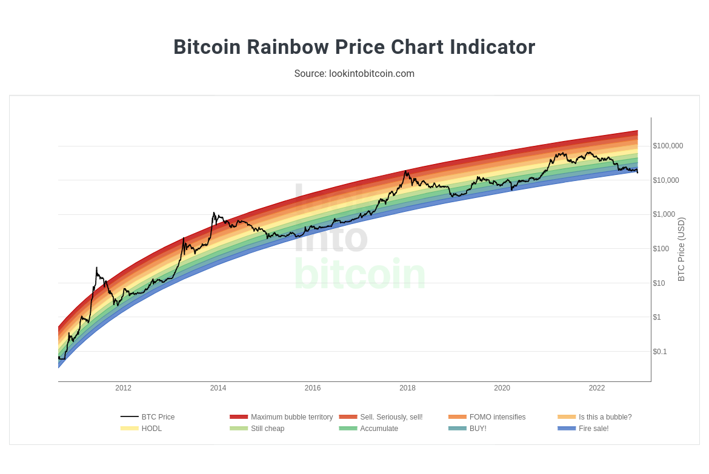
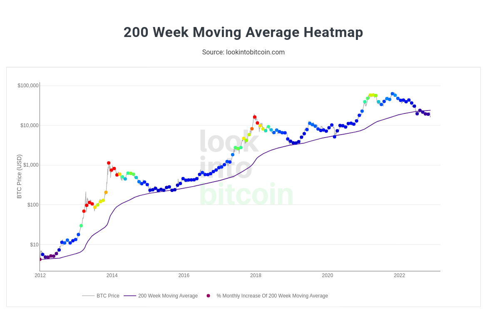
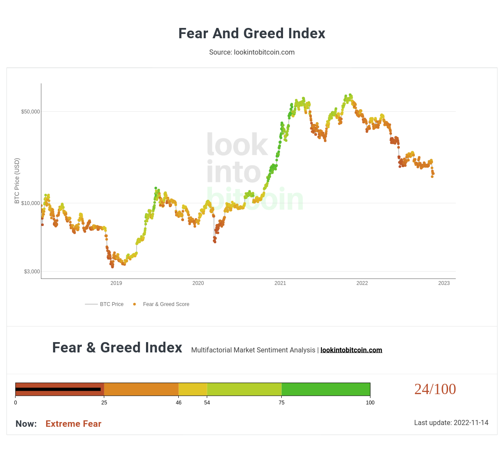
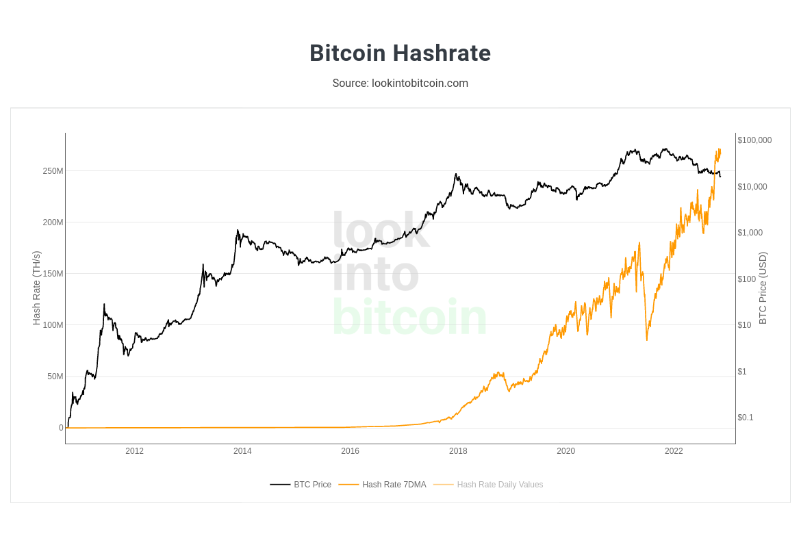
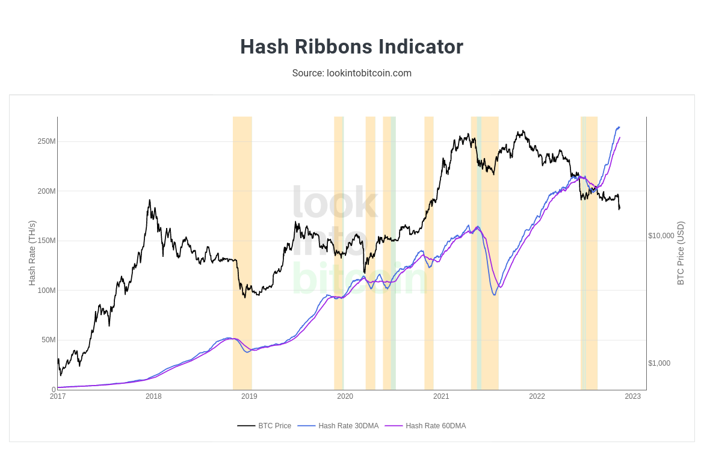
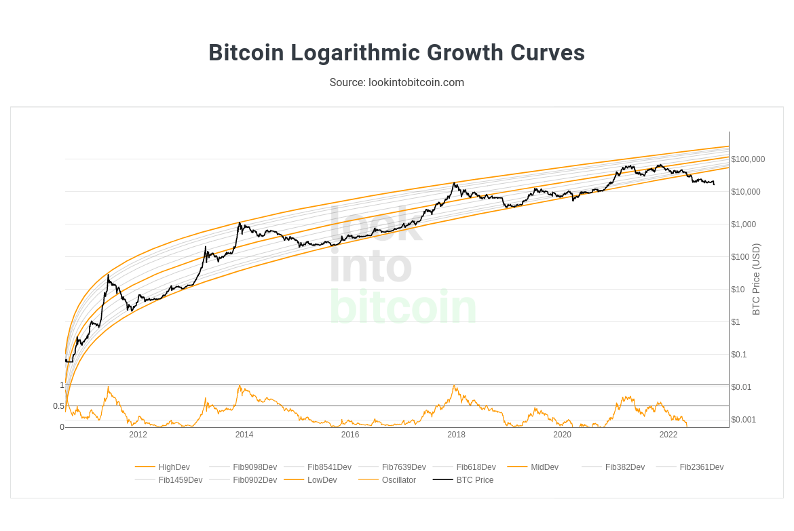
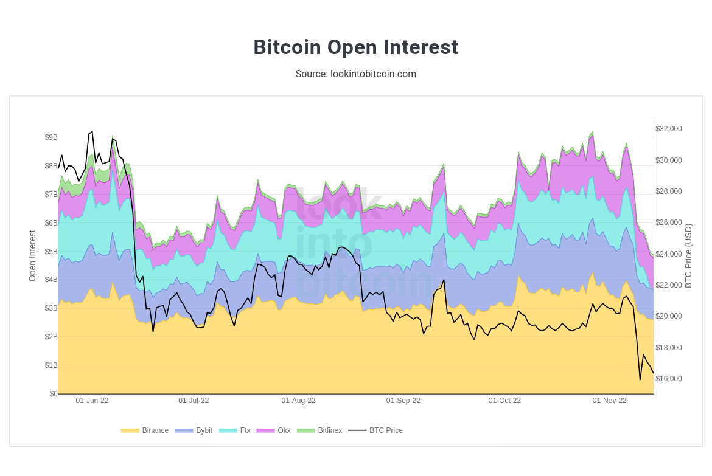
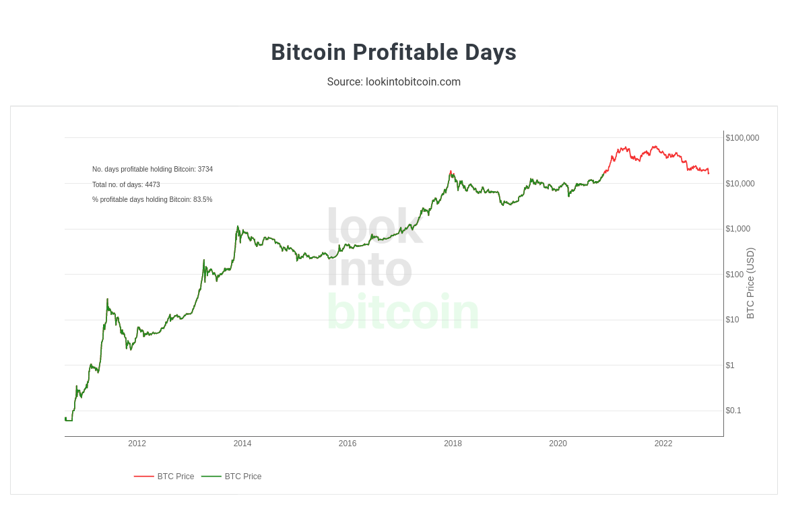

The number 1 blog for BASED investing!
In this chart provided by Glassnode, the supply of BTC is messured in what they describe as "long-term holders" wallets. The supply of BTC has reached a all time high in long-term BTC investor wallets, and this may be the biggest bull signal yet. Historically, long-term wallets seemed to know something the average joe does not. Could this be due to manipulation? Luck? Magic? Unfortunately it is most likely neither of theese. Long-term investors tend to study their asset more thourouly than the average SHITCOIN gambeler, and subsequently tend to predics market cycles with better acuracy. The best investors preach a very good quote that applies nicely to this, "its not about timing the market, its about time in the market!". Those with "time in the market" seem to be buying, so I will copy them.
Ever since the top at 69k many have been anxiouslly waiting for the next bull run to start. With historical analysis and trends we can gain closer understanding to when we might see BTC start heating up again.
The BTC Rainbow indicator is a chart that shows the general logarithmic trnd bitcoin is following and places it over a "rainbow" that shows how good of a deal BTC's price is at. Historically speaking the rainbow chart has been a great indicator of long term trends. Right now bitcoin is about to break below the "firesale" level of the rainbow.
The 200 week moving average heatmap measures the monthly % increase of bitcoin over the 200 WMA. As we can see btc is below the 200 week moving average showing that we are currently at a very low momentum. Historically BTC has never broken below the 200 WMA and bitcoin is at its best it has ever been. Is BTC breaking the 200 WMA a bull of bear signal? I would argue its BULLISH AF.
As we all know, the crypto market is unreagulated and ACTUAL REAL free market. This means that manipulation is plentyfull and all over the crypto-space. Fear and greed tend to be the number one way "market makers" manipulate the market to their favor. This chart shows the fear and greed of the public over the BTC price highlighting the hypothesis that when fear is heavy, BTC PUMPS.
 Hash-Rate goes up and down depending on how many miners are actively mining bitcoin. As we know, BTC miners are usually people who have been invested in crypto for a long time and have a generally acurate strategy for when to buy and when to sell. The BTC hash-rate has risen sharply as the price of BTC has slowly bled and DUMPED. This means miners are actively looking to grow their BTC reserves for the next leg UP, as of now it looks like they are going into overdrive to hoard as many coins as possible. ( See chart above, ATH for hash-rate )
Here we can see the logarithmic growth curves of BTC over the price line. Although BTC has broken below the trend, we have recently seen how manipulated the market has been over the last bull run thanks to platforms like ((FTX)). Could it be the maybe btc has broken my indicators due to this? Could be. Im betting that BTC breaking below the logarithmic curve is a extremely bullish signal as BTC is at the most adoption and usecase it has ever been. We are definitely not going to 0, sorry Peter Schiff.
A big disscution in the crypto space has been the amount of leaverage in the market and how it affects price action intensely. At high levels of interest we can predict a pretty volitile market as most people who use leaverage are SHITCOIN gambelers as you and me. This means that "market makers" can manupulate the price heavily by simply causing liquidation watterfalls either in shorts or longs. As interest is at the lowest we can certainly say that a leverage crash will most likely not happen any time soon
To end it off, we have not seen a profitable day of bitcoin in a longtime. Although this does not mean we will pump immediately, it does mean that everyday that passes we are inevitably closer to the MASSIVE PAMP that is comming. BTC keeps getting adopted all over the word despite the price action and critisism all around. This is the most bullish signal in my opinion and highlights how long we have been in a bear market.
I am a speculative investor and SHITCOIN gambeler, my thorough and intense reaserch in meme magic has granted me the magical powers of "feeling" when the inevitable PAMP is coomin. 1 BTC = 1 BTC
BTC ETH LINK SOL BNB KCS